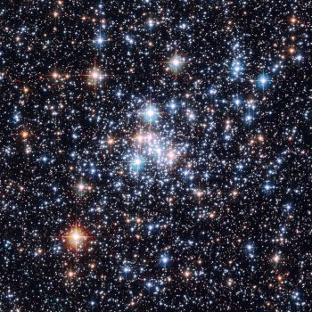

NGC 290, an open star cluster in the Small Magellanic Cloud (courtesy NASA/ESA(Replaced)
The twenty-first annual international conference on Neutrino Physics and Astrophysics (Neutrino 2004) was held from 14 June to 19 June 2004 at the Collège de France, Paris.
Supernova II Workshop at UCLA